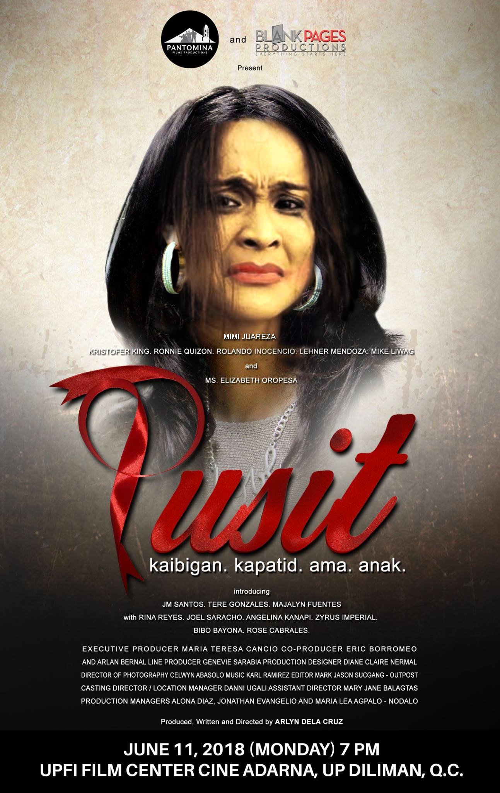

Trisha Echevarria (Isabel Sandoval), is a transgender woman whose sexuality is greatly opposed by her father (Joel Torre), causing her to leave their house and live with her best friend Barbs (Christian Bables).
Trisha Echevarria (Paolo Ballesteros), is a transgender woman whose sexuality is greatly opposed by her father (Joel Torre), causing her to leave their house and live with her best friend Barbs (Christian Bables).
Childhood friends, ANTON De MONTEVERDE (JC DeVera) and ANTON GUERRERO (Neil Coleta) vow to stay friends forever even if fate would draw them apart. True enough, when Wacko's family migrated to Japan, the bond between them remains intact. After more than 15 years of separation, ANTON, now a successful leadership speaker is excited to be reunited with his childhood bestfriend. However instead meeting of Wacko at the airport, he meets the beautiful but outlandish woman, WINONA VALENCIO (Ivory Aquino), who happens to be Wacko's fiancée.
Childhood friends, ANTON De MONTEVERDE (JC DeVera) and ANTON GUERRERO (Neil Coleta) vow to stay friends forever even if fate would draw them apart. True enough, when Wacko's family migrated to Japan, the bond between them remains intact. After more than 15 years of separation, ANTON, now a successful leadership speaker is excited to be reunited with his childhood bestfriend. However instead meeting of Wacko at the airport, he meets the beautiful but outlandish woman, WINONA VALENCIO (Roxanne Barcelo), who happens to be Wacko's fiancée.

"Pusit" is gay lingo for "positive", specifically "HIV positive." Throughout the 2-hour course of the film, we will be meeting six HIV-positive patients who now had AIDS and how they cope with their dire illness. We will also meet the family and friends around them and the different ways these people react to the difficulty of caring for AIDS patients, as well as how they deal with the social stigma around it.
"Pusit" is gay lingo for "positive", specifically "HIV positive." Throughout the 2-hour course of the film, we will be meeting six HIV-positive patients who now had AIDS and how they cope with their dire illness. We will also meet the family and friends around them and the different ways these people react to the difficulty of caring for AIDS patients, as well as how they deal with the social stigma around it.